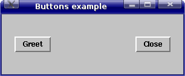
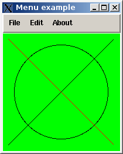

Tcl/Tk

Tcl/Tk
| <- Linkki Tcl/Tk:n kansainväliselle sivulle. |
Tcl on listapohjainen skriptikieli, jonka suurin merkitys on siinä, että grafiikkakirjasto Tk on kirjoitettu ensinnä sitä tukemaan. Jokainen Tcl:n komento on lista, jossa ensimmäisenä on aina käsky, jota seuraavat argumentit. Esimerkki alkeellisesta Tcl-ohjelmasta:
puts "Nimesi: " gets stdin nimi puts "Hei $nimi"Ohjelma voidaan tallentaa vaikka nimelle "hoi.tcl" ja ajaa käskyllä
$ tclsh ./hoi.tcl Nimesi: Mikko Hei MikkoSiinä luetaan merkkijono standardista sisäänmenosta (komentoriviltä) ja sijoitetaan muuttujaan "nimi". Viimeisestä
puts-lauseesta on huomattava $-merkki, mikä pyytää
laventamaan muuttujan arvoonsa ja kaksinkertaiset lainausmerkit.
Jos ohjelma olisi kirjoitettu virheellisesti muodossa:
puts "Nimesi: " gets stdin nimi puts 'Hei $nimi'niin olisi seurannut virheilmoitus:
Nimesi:
Mikko
can not find channel named "'Hei"
while executing
"puts 'Hei $nimi'"
(file "./hoi2.tcl" line 3)
Yksinkertaisissa lainausmerkeissä olevaa ei nimittäin lavenneta eikä
yhdistetä, joten sana "Hei" olisi tulkittu puts-käskyn
1. argumentiksi (tiedostoon osoittavaksi muuttujaksi). Vastaavasti:
puts "Nimesi: "
gets stdin nimi
puts {Hei $nimi}
olisi tuottanut lopputulokseksi
Nimesi: Mikko Hei $nimiAaltosulkeet tarkoittavat, että yhdistetään yhdeksi parametriksi, muttei lavenneta mitään.
Tarkastellaan seuraavaksi silmukkarutiineja ja laaditaan kertotaulu:
for {set y 0} {$y<16} {incr y} {
for {set x 0} {$x<16} {incr x} {
set res [expr {$y*$x}]
set resstr [format "%4d" $res]
if {$x<15} {
puts -nonewline $resstr
} else {
puts $resstr
}
}
}
Silmukkarakenteiden lisäksi huomattavaa ovat hakasulkeet (laskee lausekkeen
arvon), expr (matemaattisen lausekkeen evaluointi), set
(muuttujaan sijoitus), ja format (C-tyylisen asemoinnin laatiminen
ja sijoittaminen merkkijonoon). Hakasulkeiden ansiosta kaikkea ei olisi tarvinnut
sijoittaa apumuuttujiin, vaan tällainenkin olisi ollut mahdollista:
for {set y 0} {$y<16} {incr y} {
for {set x 0} {$x<16} {incr x} {
if {$x<15} {
puts -nonewline [format "%4d" [expr {$y*$x}]]
} else {
puts [format "%4d" [expr {$y*$x}]]
}
}
}
Monimutkaiset sisäkkäiset lausekkeet kuitenkin tekevät
tässä, kuten muissakin kielissä, ohjelmista vaikeaselkoisia.
Vältä sellaista!
Seuraava ohjelma käsittelee listoja laatimalla listan kyseisen hakemiston
alihakemistoista ja tavanomaisista tiedostoista. On huomattava, että
jos vipua -nocomplain ei annettaisi, kaatuisi ohjelma virheeseen
siinä tavanomaisessa tapauksessa, ettei jommassakummassa listassa olisi
yhtään alkioita.
set dirlist [glob -nocomplain -type d *]
set filelist [glob -nocomplain -type f *]
puts "Directories:"
foreach dirname $dirlist {
puts $dirname
}
puts "Ordinary files:"
foreach filename $filelist {
puts $filename
}
Seuraava rutiini määrittää uuden funktion ja hyödyntää rekursiota ja globaalia muuttujaa (näihin viittaavat kohdat on lihavoitu):
#!/usr/bin/tclsh
proc dirtree {depth} {
global max_depth
if {$depth > $max_depth} {
return
}
set dirlist [glob -nocomplain -type d *]
foreach dirname $dirlist {
for {set i 0} {$i<$depth} {incr i} {
puts -nonewline " "
}
puts $dirname
cd $dirname
dirtree [expr {$depth+1}]
cd ..
}
}
if {$argc>0} {
set max_depth [lindex $argv 0]
} else {
set max_depth 4
}
dirtree 0
tulostaen hakemistopuun halutulta syvyydeltä, esim:
$ tclsh dirtree.tcl 5 ...Oletussyvyys on 4. On huomattava myös ensimmäisellä rivillä esiintyvä määrite
#!/usr/bin/tclsh. Se tarkoittaa,
että jos tämän skriptin sisältävälle tiedostolle
annetaan Unix-järjestelmässä attribuutti x, niin
se voidaan ajaa ilman tclsh:n kutsua, s.o.
$ chmod ug+x dirtree.tcl $ ./dirtree.tcl 5 ...
Helppo tekstipohjainen kello-ohjelma voidaan kirjoittaa vaikkapa näin:
while {1} {
set t [clock seconds]
puts -nonewline "[clock format $t -format "%Y-%m-%d %H:%M:%S"]\r"
flush stdout
after 100
}
Koska tuloste on relevantti vain noin 1 sekunnin välein, niin tässä
on (naiivisti) laitettu 100 millisekunnin eli kymmenesosasekunnin
viivästyskomento. Fiksumpi ohjelma voisi mitoittaa viivästyskomennon
ensimmäisen "nopealla sykkeellä" havainnoidun sekunninvaihdoksen
avulla, muttei tämäkään "liian raskas" liene.
Tk on Tcl:n päälle laadittu grafiikkakirjasto, joka on tarkoitettu laitteisto-
ja käyttöjärjestelmäriippumattomaksi. Tk:n komennot siis
kutsuvat tarvittavia Micro$oft Windows:in tai X Windows:in systeemikutsuja ilman,
että ohjelmoijan tarvitsee näitä koskevista yksityiskohdista
välittää. Tk-ohjelmat ajetaan wish
(WIndowing SHell)-nimisellä apuohjelmalla, joka tulee täydellisten
Tcl/Tk-pakettien mukana. Tk:lle on merkitystä luotavien objektien, jotka voivat
olla esim. ikkunoita, nappeja, tekstikenttiä, menuja, polkunimet. Kun
wish alunperin käynnistetään, niin se avaa automaattisesti
yhden popup-ikkunan, jonka polkunimi on . (piste). Tämä on
esimerkki eräästä ylätason (toplevel) ikkunasta.
Seuraava on naiivi kahden nappulan esimerkki:
package require Tk
wm minsize . 300 100
wm title . "Buttons example"
pack [button .b -text "Greet" -command greet] -side left -padx 20 -pady 30
pack [button .bb -text "Close" -command exit] -side right -padx 20 -pady 30
proc greet {} {
puts "Hello world"
}
On erityisesti huomattava se, kuinka ensin varmistetaan paketin Tk lataaminen,
tämän jälkeen annetaan ikkunointimanagerikomennot (minimikoko,
nimike) ja lopuksi lisätän napit pakkausmanagerin pack
avulla. Kummallekin napille annetaan myös toimintafunktio,
vasemmanpuoliselle itsemääritelty tulostuskäsky, oikeanpuoleiselle
sisäänrakennettu poistumiskomento. Ajamalla ylläoleva ohjelma
käskyllä
$ wish ./buttonexample.tclsaadaan seuraavanlainen 'sovelma':

Esitellään seuraavaksi vielä malliesimerkki graafisesta käyttöliittymästä. Niiden laatiminen on yhtäaikaa helppoa ja vaikeata, selvitään vähin käskyin, mutta on esimerkiksi työlästä selvittää itselleen, miten eri kohdalla 'polussa' olevat graafiset komponentit asetetaan mukaan 'sovelmaan':
package require Tk;
wm title . "Menu example"
. configure -menu [menu .m -tearoff false]
menu .m.filemenu -tearoff false
menu .m.editmenu -tearoff false
menu .m.aboutmenu -tearoff false
.m add cascade -menu .m.filemenu -label File
.m add cascade -menu .m.editmenu -label Edit
.m add cascade -menu .m.aboutmenu -label About
.m.filemenu add command -label "New" -command "newFile"
.m.filemenu add command -label "Open" -command "openFile"
.m.filemenu add command -label "Exit" -command exit
.m.editmenu add command -label "Undo" -command "undoEdit"
.m.aboutmenu add command -label "About" -command "about"
canvas .c -height 200 -width 200 -bg green
.c create line 10 10 190 190 -fill red
.c create line 10 190 190 10
.c create oval 20 20 180 180
pack .c
proc newFile {} {
puts "New File"
}
proc openFile {} {
puts "Open File"
}
proc undoEdit {} {
puts "Undo editing."
}
proc about {} {
if {[winfo exists .aboutwindow]} {
puts "'About'-window already exists"
} else {
toplevel .aboutwindow
wm title .aboutwindow "About"
label .aboutwindow.about -text "Menu example - Mikko Nummelin, 2008"
pack .aboutwindow.about -side top -padx 5 -pady 5
pack [button .aboutwindow.b -text "Close" -command "closeAbout"] \
-side bottom -padx 5 -pady 5
}
}
proc closeAbout {} {
destroy .aboutwindow
}
Jonkin verran tässä on mukana pelkkiä 'stubeja', joihin voi keksiä
fiksumpia toimintoja. Lisäksi on malliesimerkki piirtämiskomennoista ja
väreistä. Ajettaessa tämä esimerkki vaikkapa komennolla:
$ wish ./menuexample.tclhavaitaan, että sovelma näyttää tältä:

Kannattaa kokeilla myös, miten menut toimivat käytännössä.